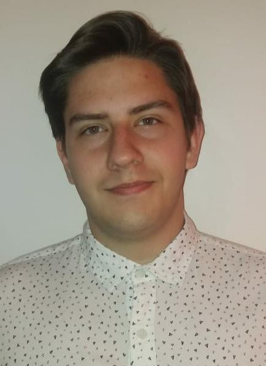

Acerca de mí
- Fecha de nacimiento: 29/04/2000
- DNI: 42497746
- Código postal: 1430
- Nacionalidad: Argentino
Contacto
- 1539136876
- camposalejandrofabian@gmail.com
Alejandro Fabián Campos
Formación académica
- Maratón Nacional de Programación y Robótica.
- CABA - Buenos Aires.
- Junio 2018-En curso.
- Curso de Programación: "Aprendé Programando".
- Desarrollo Web Nivel 1 - HTML, CSS y Bootstrap.
- Dirección General de Tecnología Educativa - Ministerio de Educación.
- CABA - Buenos Aires.
- Marzo 2018-Julio 2018.
- Taller de robótica: automatización de espacios.
- Diseño y aplicación de circuitos automatizados utilizando arduino.
- Liceo 9 D.E. 10 Santiago Derqui.
- CABA - Buenos Aires.
- Mayo 2017-Diciembre 2018.
- Concurso de Crecimiento de Cristales para Colegios Secundarios 2018.
- Asociación de Cristalografía Argentina, clases dictadas en: Liceo 9 D.E. 10 "Santiago Derqui".
- Liceo 9 D.E. 10 Santiago Derqui.
- CABA - Buenos Aires.
- Abril 2018-Septiembre 2018.
- XIXº Modelo de Naciones Unidas de la Universidad de Belgrano(MONUB).
- Modelo de Naciones Unidas, Asamblea general 1.
- Universidad de Belgrano.
- 9-13 de octubre de 2017.
- Diseño y Desarrollo de Videojuegos.
- Básicas del diseño y desarrollo de videojuegos.
- Universidad Tecnológica Nacional, Instituto Nacional Superior del Profesorado Técnico. Curso de extensión del programa Adolescencia.
- CABA - Buenos Aires.
- Abril 2016-Diciembre 2016.
- Estudios Secundarios: Liceo Nº 9 D.E. 10 Santiago Derqui.
- Título: Bachiller orientado a Ciencias Naturales.
- CABA - Buenos Aires.
- Marzo 2014-Diciembre 2019, en curso.
- Estudios Primarios: Nuestra Señora del Carmen (Urquiza).
- CABA - Buenos Aires.
- 2006-2012.
Experiencia laboral
- Cadete de mercadería textil para María Luisa Gerula (Diseñadora textil).
- Llevado en cabo utilizando: transporte público y bicicleta.
- CABA - Buenos Aires.
- 2011-2012.
- Referencia: María Gerula(superiora), 1544093838.
Idiomas
- Estudio de lengua extranjera: Inglés.
- Instituto Surif Babar (Capdevila 3362)
- CABA - Buenos Aires.
- 2009-2012/2014-2015.
- Inglés: Avanzado. Certificación Internacional de Nivel Intermedio.
- Francés: Básico.
Informática
- Diseño y edición de video y audio.
- Adobe Premiere (cs6,CC).
- Adobe After Effects.
- Sony Vegas Pro.
- Ofimática.
- Autoedición.
- Procesadores de texto.
- Hojas de cálculo.
- Internet.
- Mail.
- Diseño.
- Adobe Photoshop.
- Gimp.
- Lenguajes de Programación.
- HTML.
- CSS.
- JavaScript.
- C#.
- Python.
- Paquetes Integrados:
- Microsoft Office.
- Google Docs.
- Sistemas Operativos.
- Microsoft Windows (10,8,7,Vista, XP).
- Internet.
- Wordpress.
- Blogger.
- Publicación en páginas de Streaming (Twitch, Youtube, etc).